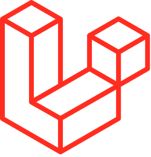
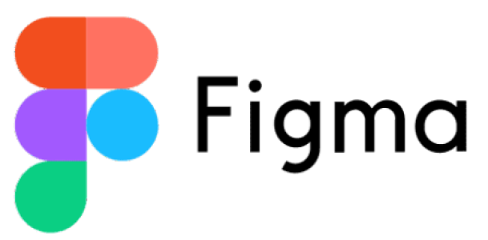
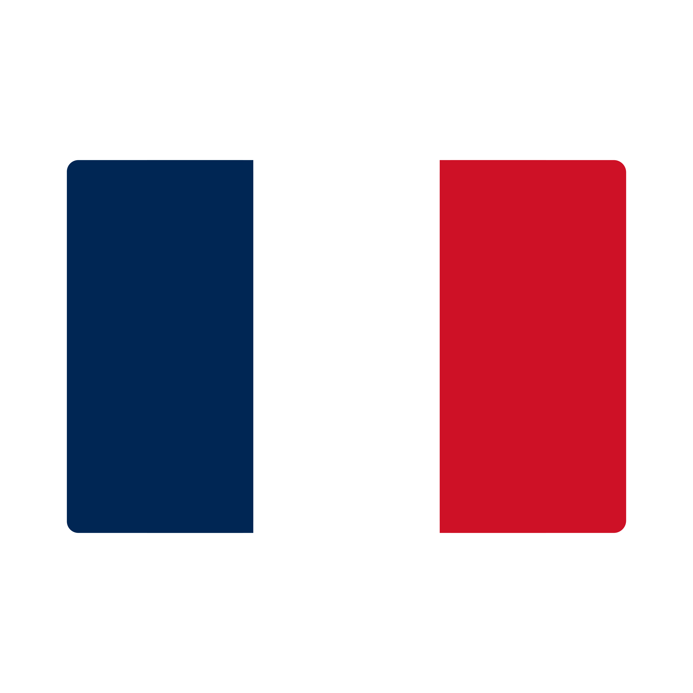
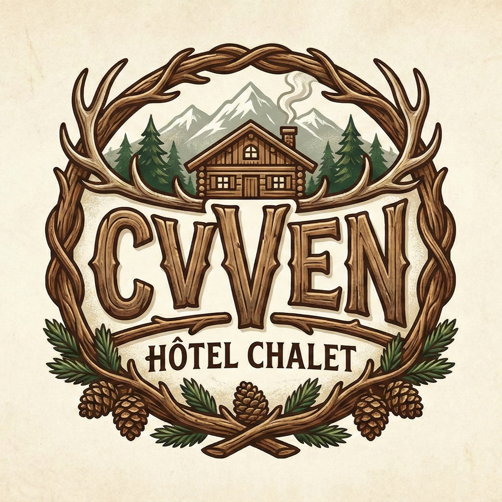
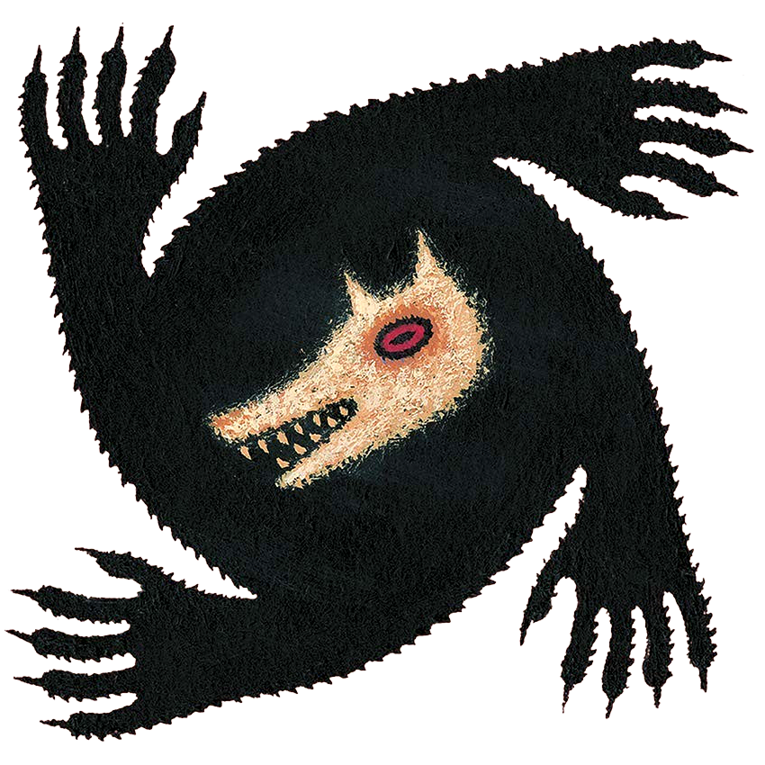

Qui est-ce ? Correcteur Automatique
Application web interactive de correction automatique d'erreurs sous forme de jeu.
Développeur Full Stack & Étudiant BTS SIO
Passionné par la création d'expériences web innovantes et performantes
En recherche d'une alternance — Ingénieur Informatique à l'ESIEE Paris
Passionné par l'informatique, je mets mes compétences et ma créativité au service de projets numériques innovants et sur mesure. Mon objectif est de créer des expériences utilisateur fluides et performantes.
Je suis en perpétuelle veille afin de rester à la pointe des dernières évolutions du secteur. Cela me permet de développer des solutions modernes et efficaces.
En dehors du code, je suis passionné par la musique, le sport et les films. Ces passions me permettent de nourrir ma créativité et d'explorer de nouvelles façons de concevoir.
Lycée Samuel Beckett, La Ferté-sous-Jouarre
Évaluation officielle des compétences numériques : utilisation d’outils numériques, recherche d’informations, communication en ligne et protection de la vie privée.
Lycée Samuel Beckett, La Ferté-sous-Jouarre
Spécialisation en Mathématiques et SVT. Mention Assez Bien. Développement du raisonnement logique et analyse de problèmes complexes.
CNAM, Paris
Fondamentaux de l’informatique : programmation, algorithmique, systèmes d’exploitation. Construction des bases solides pour poursuivre vers des spécialisations en développement, cybersécurité et intelligence artificielle.
Je n’ai cependant pas poursuivi cette licence. Ce choix ne relève pas d’un échec, mais d’un apprentissage personnel : le format des cours du soir, majoritairement en distanciel, ne correspondait pas à mes méthodes de travail ni à ma manière d’apprendre efficacement. Cette expérience m’a permis de mieux identifier l’environnement pédagogique dans lequel je peux réellement m’épanouir et progresser.
Lycée René Descartes, Champs sur Marne
Spécialisation en cybersécurité avec focus sur le développement d’applications. Apprentissage des solutions informatiques adaptées aux besoins des organisations, architecture MVC, sécurité et gestion de projets informatiques.
ESIEE Paris, Noisy-le-Grand
Grand Admissible — Spécialité Design, Architecture et Développement. Formation d’ingénieur en informatique au sein d’une grande école reconnue, avec une spécialisation orientée conception logicielle, architecture système et développement d’applications.
🔍 En recherche d’une alternance
Spécialiste en gestion immobilière
J'ai effectué mon stage au sein de la section informatique, où j'ai pu realisé un projets de gestion de fournisseur. Expérience enrichissante dans un environnement professionnel structuré.
Tuteur : Christophe Rousseau
Adresse : 35 ter, avenue André Morizet - 92100 Boulogne
Spécialiste en gestion immobilière
Je réaliserai mon stage de deuxième année au sein de la section informatique de Loiselet & Daigremont, poursuivant ainsi ma collaboration avec l'entreprise pour approfondir mes compétences en développement web. Dans ce dernier j'ai repris pour amélioration, le projet de gestion des fournisseurs en projet de gestion de stock : LoDaStock
Tuteur : Christophe Rousseau
Adresse : 14 Rue Garnier - 92200 Neuilly-sur-Seine







FrançaisNatif
 Anglais
AnglaisIntermédiaire
 Allemand
AllemandBasique
Application web interactive de correction automatique d'erreurs sous forme de jeu.

Projet web développé avec Code Igniter, connecté à une base de données. Gestion d'hôtel.

Projet de gestion de Stock suite du projet de gestion de fournisseur en CRUD. Projet de stage de Deuxième année
Application de veille technologique full-stack qui analyse et synthétise les tendances tech grace à des flux RSS, avec backend Python et frontend JavaScript, déployée sur Vercel.
Application de bureau (client lourd) de gestion hôtelière développée en JavaFX, structurée selon le modèle MVC, permettant l'administration complète d'un centre de vacances (clients, hébergements, réservations, facturation) avec une base de données MySQL.

Application web mobile "client léger" développée avec Next.js et Node.js/Socket.IO, permettant aux joueurs de rejoindre une partie de BOTC via QR code et au maître du jeu de gérer dynamiquement les rôles, les timers et les statuts en temps réel.
Création d'un système de gestion de tickets en PHP avec base de données MySQL.
Application web de gestion de tâches avec stockage local.
Manipulation de bases de données avec jointures, sous-requêtes et vues.
Mise en place et configuration d'un réseau local avec routage et VLAN.
Développement de scripts Python pour automatiser des tâches système.
Exercices de programmation orientée objet avec héritage et polymorphisme.
Je fais une veille technologique active pour rester informé des dernières innovations dans un domaine précis. Cette veille me permet de comprendre l'évolution des technologies et leurs applications pratiques.
J'ai choisi la bio-informatique car c'est un domaine qui combine bases de données, analyse de données et Big Data, en pleine expansion dans la santé et la recherche scientifique.
Je suis de près l'évolution des outils d'intelligence artificielle appliqués au développement, avec un intérêt particulier pour Claude Code d'Anthropic et les assistants de codage.
Ce domaine transforme profondément les pratiques de développement en automatisant certaines tâches, en augmentant la productivité et en ouvrant de nouvelles façons de concevoir des logiciels.
Site de veille technologique collaboratif regroupant l'ensemble des veilles de notre promotion BTS SIO pour l'année 2026. Chaque étudiant y partage ses recherches et découvertes dans son domaine de veille.
Ce projet collectif nous permet de mutualiser nos connaissances et de couvrir un large spectre des évolutions technologiques actuelles.